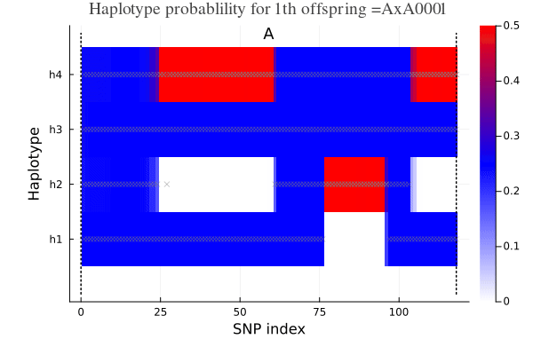
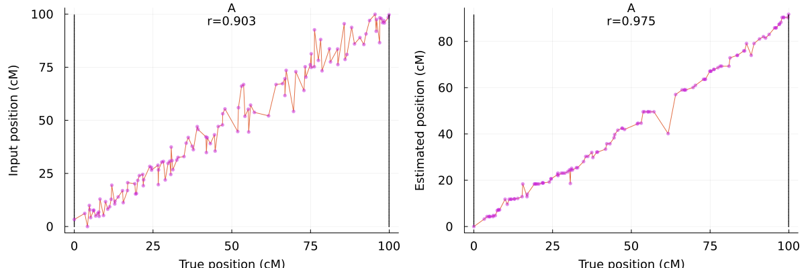

Run polyOrigin
Run function polyOrigin for haplotype reconstruction. Here is a simulated example of a tetraploid population, consists of four subpopulations: three crosses among 3 parents and one selfing of the first parent. The genofile contains genetic map with 120 SNPs and dosage data for 3 parents and 120 offspring.
using PolyOrigin
workdir = joinpath(pkgdir(PolyOrigin),"docs","run_polyOrigin")
genofile = "geno_disturbed.csv"
pedfile = "ped.csv"
outstem = "outstem"
polyancestry = polyOrigin(genofile,pedfile;
chrpairing=44,
isphysmap = false,
refinemap=true,
refineorder=true,
workdir,
outstem,
)
filter(x->occursin(outstem,x), readdir(workdir))8-element Vector{String}:
"outstem.log"
"outstem_genoprob.csv"
"outstem_maprefined.csv"
"outstem_parentphased.csv"
"outstem_parentphased_corrected.csv"
"outstem_polyancestry.csv"
"outstem_postdoseprob.csv"
"outstem_valentsummary.csv"Here chrpairing=44 denotes bivalent and quadrivalent formations in ancestral inference. isphysmap specifies if the input map is a physical map, refinemap specifies if refine the input map and refineorder specifies further if refine only inter-marker distances (refinemap=true and refineorder=false), workdir specifies the directory of input and output files, and outstem specifies the filename stem for output files.
The polyOrigin function produces the following outputfiles:
outstem.log: log file saves messages that are printed on console.outstem_maprefined.csv: same as the input genofile, except that input marker map is refined.outstem_parentphased.csv: same as the input genofile, except that parental genotypes are phased.outstem_parentphased_corrected.csv: the phased parent genotypes are corrected.outstem_polyancestry.csv: saves the returned variable polyancestry. See alsopolyOriginfor more details.outstem_genoprob.csv: a concise version of the above file, including genetic map, phased parental genotypes, and posterior origin-genotype probabilities.outstem_postdoseprob.csv: same as the input genofile, except that parent genotypes are phased and offspring genotypes are given by the posterior dose probabilities.
Here outstem_maprefined.csv, outstem_parentphased.csv, outstem_parentphased_corrected.csv, or outstem_postdoseprob.csv may be iteratively used as the input genofile.
Visualize conditional probability
The outstem_polyancestry.csv can be read back by the function readPolyAncestry, and ancestral conditional probability can be visualized by plotCondprob or animCondprob.
polyancestry = readPolyAncestry("outstem_polyancestry.csv",workdir=workdir)
truegeno = readTruegeno!("true.csv",polyancestry,workdir=workdir)
using Plots
animCondprob(polyancestry; truegeno=truegeno,
left_margin = 8Plots.mm, bottom_margin = 5Plots.mm)
Evaluate estimated map
Compare input map and estimated map with true map
polygeno=readPolyGeno(genofile,pedfile,workdir=workdir)
fig = plotMapComp(truegeno.truemap,polygeno.markermap,
xlabel="True position (cM)",
ylabel="Input position (cM)")
fig2 = plotMapComp(truegeno.truemap, polyancestry.markermap,
xlabel="True position (cM)",
ylabel="Estimated position (cM)")
using Plots
plot(fig,fig2,left_margin = 8Plots.mm, bottom_margin = 5Plots.mm)
where tau is the Kendall rank correlation between true map and comparing map.